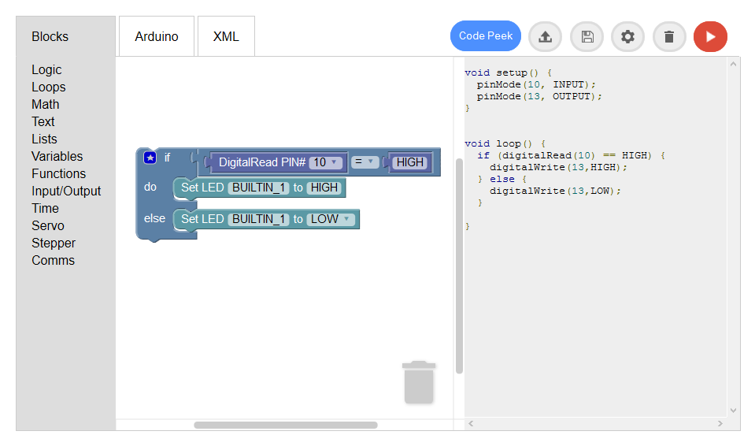

Ardublockly
"Ardublockly" is a fork of Blockly, a web-based graphical programming editor, that has been updated to generate Arduino code.
This project is influeced by BlocklyDuino, also based on an older version of Blockly.
The "ArduBlocklyServerCompiler" component initialises a local server with Python to be able to compile and load the Arduino code using the Arduino IDE.
Features
- TBD

Demo
TBD
Running Ardublockly
To run the application execute the "launch_arduino.py".
Required Software
- Python 2.7.x, currently development is maintaining compatibility with 3.x
- Arduino IDE version 1.5 or higher
- Browser of your choice (currently supports Firefox, Chrome, IE8+, Opera and Safary)